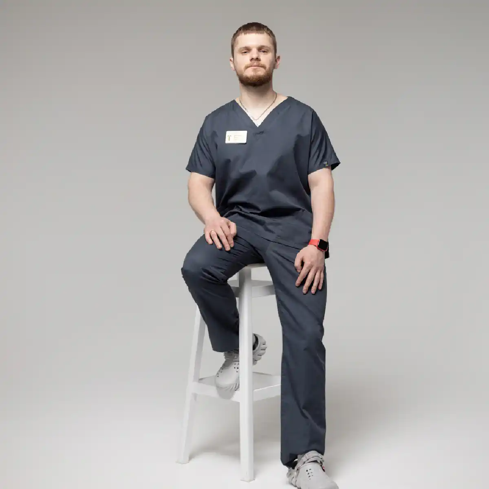

+38(068) 79 72 782
+38(068) 79 72 782Швидка допомога при алкогольному отруєнні у Харкові
Анонімно і цілодобово


Безкоштовна консультація, працюємо цілодобово 24/7
Анонімно і цілодобово

Дата написання: 6 вер. 2026 р.
Останнє оновлення: 6 вер. 2026 р.
Швидка допомога при алкогольному отруєнні в Харкові необхідна, коли після вживання алкоголю стан людини різко погіршується, з’являються виражена слабкість, нудота, багаторазове блювання, порушення координації, сплутаність свідомості або інші ознаки тяжкої інтоксикації. Важливо правильно оцінити ситуацію: частина пацієнтів може отримати допомогу лікаря-нарколога вдома, однак у разі втрати свідомості, судом, порушення дихання або підозри на тяжке отруєння необхідно викликати екстрену медичну допомогу за номером 103. Тактика залежить від кількості та виду вжитого алкоголю, часу останнього вживання, віку пацієнта, супутніх захворювань, рівня свідомості, дихання, пульсу та артеріального тиску. Особливо обережного підходу потребують ситуації, коли невідомо, який саме алкоголь вживав пацієнт, є підозра на сурогати або спиртне поєднувалося з лікарськими препаратами чи іншими психоактивними речовинами.
Звернутися по медичну допомогу необхідно, якщо після вживання алкоголю стан людини значно гірший, ніж за звичайного похмілля. Насторожити мають виражена сонливість, сплутаність свідомості, неможливість нормально стояти або розмовляти, багаторазове блювання, різка слабкість і незвична поведінка. Особливо небезпечними є втрата свідомості, неможливість розбудити людину, судоми, виражене уповільнення або порушення ритму дихання, посиніння або різка блідість шкіри. У такій ситуації не можна обмежуватися викликом приватного нарколога та очікуванням домашньої крапельниці — потрібна екстрена медична допомога. Якщо пацієнт при свідомості, нормально дихає, здатний контактувати і його стан відносно стабільний, можна отримати консультацію та визначити, чи підходить йому виклик нарколога додому в Харкові.
Алкогольна інтоксикація може проявлятися по-різному залежно від дози, швидкості вживання, індивідуальної чутливості до алкоголю та стану здоров’я людини. За відносно легкого ступеня виникають порушення координації, зміна мовлення, сонливість, нудота, запаморочення та загальна слабкість. За більш вираженої інтоксикації людина може погано орієнтуватися в тому, що відбувається, неадекватно відповідати на запитання, з труднощами утримуватися на ногах або засинати настільки глибоко, що її складно розбудити. Можливе повторне блювання, що особливо небезпечно за пригніченого стану свідомості через ризик потрапляння блювотних мас у дихальні шляхи. Тяжка інтоксикація супроводжується порушенням життєво важливих функцій і потребує екстреної оцінки. Тому зняття алкогольної інтоксикації завжди має починатися не з вибору складу крапельниці, а з визначення тяжкості стану пацієнта.
За високих концентрацій етанолу алкоголь здатний пригнічувати ділянки центральної нервової системи, які відповідають за свідомість, дихання та інші життєво важливі функції. Саме тому тяжке алкогольне отруєння не можна сприймати як ситуацію, яку достатньо просто «проспати». Небезпека також пов’язана з блюванням на тлі порушеної свідомості, падіннями та травмами, переохолодженням, зневодненням і поєднаним вживанням алкоголю з лікарськими або наркотичними речовинами. Особливо уважно необхідно ставитися до пацієнтів похилого віку, людей із захворюваннями серця, печінки, нирок, цукровим діабетом та іншими серйозними хронічними захворюваннями. Навіть однакова кількість алкоголю у різних людей може призводити до абсолютно різного ступеня інтоксикації.
Похмілля зазвичай розвивається через деякий час після вживання алкоголю і може супроводжуватися головним болем, спрагою, слабкістю, нудотою, дратівливістю та загальним поганим самопочуттям. При цьому людина, як правило, перебуває у свідомості, нормально контактує та здатна самостійно пити рідину. Алкогольне отруєння потенційно значно небезпечніше. Якщо пацієнт втрачає свідомість, його важко розбудити, порушується дихання, з’являються судоми, виражена сплутаність свідомості або безперервне блювання, такий стан не можна вважати звичайним похміллям. У разі сумнівів краще отримати медичну оцінку. Наркологічна допомога вдома може використовуватися лише тоді, коли стан пацієнта дозволяє безпечно проводити лікування поза стаціонаром.
Особливо небезпечним є вживання невідомих спиртовмісних рідин, технічних спиртів та алкоголю сумнівного походження. У таких продуктах, крім етанолу, можуть міститися токсичні речовини, вплив яких суттєво відрізняється від звичайної алкогольної інтоксикації. Наприклад, отруєння метанолом може супроводжуватися головним болем, нудотою, блюванням, порушеннями зору, вираженою слабкістю та подальшим тяжким погіршенням стану. При цьому між вживанням і розвитком характерних проявів іноді існує період відносного благополуччя. Пам’ятайте, термінова крапельниця від алкоголю в Харкові, в такій ситуації, не повинна замінювати екстрену медичну допомогу. За підозри на сурогатний алкоголь необхідно якомога швидше звернутися по невідкладну допомогу та повідомити лікарям, яка речовина, ймовірно, вживалася.
До приїзду медичної допомоги головне — стежити за свідомістю та диханням людини й не залишати її саму. Якщо пацієнт перебуває у свідомості, його бажано розташувати у безпечному положенні та спостерігати за змінами стану. Якщо людина втратила свідомість, але продовжує самостійно дихати, важливо забезпечити положення, яке зменшує ризик потрапляння блювотних мас у дихальні шляхи. У разі блювання у пацієнта, який перебуває у свідомості, необхідно стежити, щоб він не захлинувся. Бажано заздалегідь підготувати для лікаря інформацію про те, що і приблизно в якій кількості вживав пацієнт, коли була остання доза алкоголю, чи приймав він лікарські препарати або інші речовини та які хронічні захворювання у нього є.
Не слід намагатися «протверезити» людину холодним душем, кавою, фізичною активністю або іншими побутовими способами. Такі методи не прискорюють виведення небезпечної концентрації алкоголю та можуть додатково погіршити стан. Не можна навмисно викликати блювання у людини з порушеною свідомістю. Це підвищує ризик потрапляння вмісту шлунка в дихальні шляхи. Також небезпечно самостійно давати сильнодіючі седативні, снодійні або інші препарати. У поєднанні з алкоголем деякі лікарські засоби можуть додатково пригнічувати центральну нервову систему та дихання. Не можна просто залишати глибоко сплячу або непритомну людину саму в надії, що вона «проспиться». При тяжкій інтоксикації стан може продовжувати погіршуватися навіть після припинення вживання алкоголю.
Термінова наркологічна допомога в Харкові може бути необхідна пацієнтам, які відчувають виражене погіршення після вживання алкоголю, але не мають очевидних ознак стану, що потребує негайної госпіталізації. Під час огляду фахівець з’ясовує обставини вживання алкоголю, оцінює свідомість, пульс, артеріальний тиск, дихання, ознаки зневоднення та загальний стан людини. Окремо враховуються хронічні захворювання та лікарські препарати, які пацієнт постійно приймає. Лише після медичної оцінки визначається подальша тактика. У відносно стабільній ситуації може проводитися симптоматичне лікування та інфузійна терапія за показаннями. У разі виявлення небезпечних ознак замість домашнього лікування рекомендується стаціонар.
Нарколог в Харкові із виїздом додому може бути зручним варіантом допомоги, коли пацієнту важко самостійно приїхати до клініки, але його стан залишається достатньо стабільним для лікування поза стаціонаром. Лікар приїжджає за адресою пацієнта, уточнює, скільки та коли вживався алкоголь, оцінює основні показники та визначає ступінь ризику. Якщо стан дозволяє, медична допомога може бути надана безпосередньо вдома. При цьому виїзд нарколога не є альтернативою державній екстреній медичній допомозі у критичних ситуаціях. Втрата свідомості, судоми та виражені порушення дихання потребують виклику 103.
Зняття алкогольної інтоксикації вдома починається з медичного огляду. Необхідно визначити, чи пов’язані симптоми переважно з наслідками вживання алкоголю, чи існують ознаки іншого небезпечного стану. Лікар оцінює загальний стан, рівень свідомості, пульс, тиск і дихання, уточнює наявність блювання, зневоднення, хронічних захворювань та препаратів, які пацієнт приймає одночасно. Після цього визначається необхідний обсяг допомоги. За наявності показань може застосовуватися інфузійна та симптоматична терапія. Універсальної схеми, яка однаково підходить кожному пацієнту після вживання алкоголю, не існує. Після процедури важливо оцінити динаміку стану. Якщо симптоми посилюються або з’являються ознаки, які неможливо безпечно контролювати вдома, потрібна госпіталізація.
Крапельниця від похмілля може бути частиною медичної допомоги за певних станів після вживання алкоголю. Вона застосовується за показаннями, а її склад та обсяг визначає лікар після огляду пацієнта. Інфузійна терапія може застосовуватися для відновлення рідини та корекції певних порушень. При цьому крапельниця не є універсальним «антидотом» алкоголю і не замінює спостереження за життєво важливими функціями при тяжкому отруєнні. Особливо обережно обсяг рідини підбирається пацієнтам із захворюваннями серця та нирок, а також людям похилого віку. Саме тому самостійні домашні крапельниці без медичного огляду небажані.
Склад крапельниці при алкогольній інтоксикації не є універсальним та підбирається лікарем індивідуально після оцінки стану пацієнта. Враховуються виразність зневоднення та інтоксикації, артеріальний тиск, робота серцево-судинної системи, наявність хронічних захворювань, тривалість вживання алкоголю та препарати, які людина приймає постійно. Залежно від клінічної ситуації інфузійна терапія може містити кілька основних напрямків:
Таким чином, крапельниця при алкогольній інтоксикації повинна призначатись після медичного огляду, а її склад може значно відрізнятися у різних пацієнтів.
Після кількох днів безперервного вживання стан людини може бути пов’язаний відразу з кількома факторами: інтоксикацією, зневодненням, недостатнім харчуванням і алкогольним синдромом відміни, що починається. Тому допомога після тривалого запою відрізняється від лікування одиничного епізоду вживання. Після зниження концентрації алкоголю у людини з фізичною залежністю можуть посилюватись тремор, тривога, пітливість, безсоння, тахікардія та інші ознаки абстиненції. У такій ситуації необхідно оцінити як необхідність зняття алкогольної інтоксикації, а й безпеку подальшого припинення вживання. При відносно стабільному стані може розглядатися виведення із запою вдома Харків, а при важкій абстиненції потрібне медичне спостереження у стаціонарі.
Домашній формат можливий не за будь-якого алкогольного отруєння. Він може розглядатися лише після оцінки стану пацієнта, якщо людина перебуває у свідомості, здатна адекватно контактувати, нормально дихає та відсутні ознаки тяжкої інтоксикації. Важливими є також супутні захворювання, вік, тривалість вживання та наявність людини, яка зможе спостерігати за пацієнтом після візиту лікаря. Якщо фахівець бачить, що стан є нестабільним або існує ймовірність швидкого погіршення, домашня терапія стає менш безпечним варіантом. У разі рекомендується наркологічний стаціонар.
Госпіталізація в наркологію необхідна при тяжкій інтоксикації, коли потрібне постійне медичне спостереження та можливість швидко реагувати на зміни стану пацієнта. Підставами для термінової оцінки у стаціонарі є втрата свідомості, неможливість розбудити пацієнта, судоми, порушення дихання, важка сплутаність свідомості, повторне блювання на тлі пригніченої свідомості та інші небезпечні симптоми. Стаціонар також переважний при підозрі на сурогатний алкоголь, тяжких супутніх захворюваннях та поєднанні спиртного з невідомими ліками чи психоактивними речовинами. У таких ситуаціях домашня крапельниця не повинна відкладати спеціалізовану допомогу.
Між звичайним викликом нарколога та екстреною медичною допомогою необхідно проводити точний кордон. Якщо людина перебуває у свідомості, контактує, самостійно дихає та її стан відносно стабільний, можна отримати консультацію нарколога та визначити можливість домашньої терапії. Якщо пацієнт знепритомнів, його неможливо розбудити, з’явилися судоми, виражені порушення дихання, посинення шкіри або інше різке погіршення, слід негайно викликати 103. Екстрена допомога також необхідна при підозрі на отруєння метанолом, технічними спиртами та іншими невідомими речовинами.
Проблеми після вживання алкоголю нерідко виникають увечері, вночі, у вихідні чи святкові дні. Тому можливість цілодобово отримати медичну консультацію дозволяє швидше визначити необхідний формат допомоги. Цілодобова наркологічна допомога може включати первинну консультацію та виїзд фахівця додому, якщо стан пацієнта дозволяє безпечно проводити медичні заходи поза стаціонаром. При цьому цілодобовий виїзд нарколога не скасовує необхідності звертатися до 103 при критичному стані. Основним завданням завжди залишається безпека пацієнта.
Багато людей відкладають звернення до нарколога через побоювання щодо конфіденційності. Це особливо актуально для пацієнтів, які працюють, ведуть бізнес або з інших причин не хочуть розголошувати інформацію про ситуацію, що виникла. Анонімна наркологічна допомога у Харкові дозволяє звернутися за консультацією та домашнім виїздом у конфіденційному форматі. Лікар проводить оцінку стану та визначає подальшу тактику. Однак анонімність не повинна стати причиною відмови від госпіталізації при небезпечному стані. За загрози життю медична безпека має пріоритет.
Вартість крапельниці від алкоголю у Харкові починається від 2199 грн.
| Популярні послуги | Ціна |
|---|---|
| Нарколог Харків | Від 1500 грн |
| Крапельниця від алкоголю | Від 2199 грн |
| Виведення із запою вдома | Від 2199 грн |
| Кодування від алкоголізму | Від 6000 грн |
Термін відновлення після алкогольної інтоксикації індивідуальний. Він залежить від кількості вжитого алкоголю, тяжкості стану, віку пацієнта, наявності зневоднення, хронічних захворювань та загального стану організму. Після відносно легкого епізоду самопочуття зазвичай покращується поступово в міру метаболізму алкоголю та відновлення водного балансу. При більш вираженій інтоксикації слабкість, порушення сну, зниження апетиту та загальне нездужання можуть зберігатися довше. Якщо вживання тривало кілька днів, вихід із запою може супроводжуватися розвитком алкогольної абстиненції: тремором, тривогою, пітливістю, прискореним серцебиттям та безсонням
Після поліпшення стану важливо продовжувати спостерігати за самопочуттям пацієнта та дотримуватися рекомендацій лікаря. Якщо алкоголь вживався кілька днів поспіль, зняття запою в Харкові не завжди закінчується однією процедурою: після зменшення концентрації алкоголю можуть посилюватись тремор, тривога, серцебиття, безсоння та інші прояви синдрому відміни. У такій ситуації бажано повторно зв’язатися зі спеціалістом та оцінити необхідність подальшого лікування. При судомах, галюцинаціях, вираженій дезорієнтації чи порушенні свідомості потрібна медична допомога. Якщо епізоди алкогольної інтоксикації та запої повторюються, важливо приділити увагу не лише відновленню організму, а й причинам, що призводять до повернення до вживання.
Якщо тяжке вживання алкоголю та епізоди інтоксикації повторюються, однієї періодичної детоксикації зазвичай недостатньо. Після стабілізації фізичного стану важливо оцінити характер вживання, частоту запоїв, вираженість тяги та ризик чергового зриву. Лікування алкоголізму в Харкові може включати консультацію нарколога, медикаментозну протирецидивну терапію за показаннями, психотерапію, роботу з мотивацією та профілактикою повторного вживання. Якщо людина регулярно йде в запої, втрачає контроль над кількістю спиртного або використовує алкоголь для полегшення абстиненційних симптомів, доцільно розглядати комплексну програму лікування. Після виходу з гострого стану та необхідного періоду тверезості лікар може обговорити різні варіанти протирецидивної терапії, у тому числі кодування від алкоголю уколом, якщо такий метод відповідає стану пацієнта, відсутні протипоказання та людина добровільно погоджується на процедуру. Основна мета подальшого лікування полягає не тільки в усуненні наслідків чергової алкогольної інтоксикації, а й у зниженні ризику повторних запоїв та повернення до небезпечного вживання алкоголю.
Щоб викликати нарколога на будинок у Харкові, бажано коротко повідомити фахівця, що сталося: скільки і приблизно якого алкоголю вжив людина, коли була остання доза, чи є пацієнт у свідомості, чи є блювота і чи нормально дихає. Також необхідно повідомити про хронічні захворювання, які постійно приймаються препарати та вживання інших речовин, якщо така інформація відома. Після отримання інформації визначається можливість домашнього виїзду. На місці лікар проводить огляд і вирішує, чи допустима крапельниця від алкоголю вдома чи пацієнту потрібен стаціонар. Якщо людина знепритомніла, з’явилися судоми, серйозні порушення дихання або є підозра на сурогатний алкоголь, не слід очікувати звичайного виїзду нарколога — необхідно зразу звертатися за екстреною медичною допомогою за номером 103.
Телефон для консультації та виклику нарколога додому в Харкові: +38(050-021-69-57)

Статтю перевірено експертом
Богоденко Костянтин
Лікар-анестезіолог, ординатор
Можливо цікава стаття:
Цироз печінки: причини, симптоми, стадії та лікування

Так, ми суворо дотримуємося повної конфіденційності на всіх етапах лікування. Інформація про пацієнта, діагноз та проходження терапії не передається третім особам. Звернення до нас не тягне за собою постановку на облік. Ви можете бути впевнені у безпеці та анонімності.
Програма лікування розробляється індивідуально після консультації з фахівцем. Враховуються вид залежності, її тривалість, фізичний та психологічний стан пацієнта. Такий підхід дозволяє підвищити ефективність терапії та знизити ризик зриву. Ми не використовуємо шаблонні рішення.
Так, ми супроводжуємо пацієнтів і після основного курсу лікування. Проводяться консультації, рекомендації щодо адаптації та профілактики рецидивів. За потреби можлива подальша психологічна підтримка. Це допомагає зберегти результат та повернутися до повноцінного життя.
Анонимно

Ну в хлопців просто золоті руки й світла голова, мене капали Олексій та Владислав, буквально за декілька сеансів я наче заново народився, до цього пив більше 3х тижнів, не міг зупинитись, дуже радий що знайшов саме цих спеціалістів, всім рекомендую
Анонимно
В течение нескольких лет я злоупотреблял алкоголь, что привело к увольнению с работы и вызвало у меня мысли о суициде. Понимая, что такой образ жизни неприемлем, я обратился за помощью в клинику “Амбрела”. Здесь я смог преодолеть свою зависимость от спиртного благодаря заботливым и опытным врачам, а также эффективной системе лечения. Спустя более года я полностью избавился от желания употреблять алкоголь, и теперь моя жизнь вернулась в норму. Я даже не приближаюсь к спиртному! Благодарю врачей клиники “Амбрела” за их помощь и заботу.
Анонимно
Я обращался за помощью в различные клиники, пытаясь избавиться от своей зависимости от алкоголя, но без особых успехов. Никак не мог справиться с желанием прибегнуть к бутылке, пока друг не посоветовал мне обратиться в центр “Амбрелла”. Я записался на прием и был поражен заботливым отношением к пациентам. Уже прошло два года, и теперь я смотрю на алкоголь с абсолютной равнодушием, активно занимаюсь спортом и улучшил отношения в семье. Благодаря центру “Амбрелла” моя жизнь была спасена от алкогольной зависимости!
Анонимно
Хочу выразить свою благодарность врачам из центра алкоголизма “Амбрела” за то, что они буквально спасли мою жизнь. В течение последнего года я сильно увлекался питьем, и все это привело к катастрофическим последствиям. Хотя я ходил на терапевтические сеансы, но безрезультатно. Тогда я нашел адрес клиники “Амбрела” в интернете, изучил отзывы и информацию о центре, и записался на прием. Там мне сразу предложили методику лечения, которая помогла не только справиться с физической ломкой, но и психической зависимостью от алкоголя. Не буду распространяться, скажу только одно - после пребывания в этой клинике я стал другим человеком, и навсегда забыл, что такое привкус алкоголя. Больше меня не тянет на это! Я искренне верю, что в центре “Амбрела” трудятся настоящие целители душ!
Анонимно
После сложного развода мой сын начал подавлять свою обиду и горе употреблением алкоголя. Он старался скрывать это от меня, но я, как мать, почувствовала, что что-то не так. В конечном итоге, ситуация стала критической. Моя знакомая посоветовала мне обратиться в клинику “Амбрела”. Я была приятно удивлена их работой! Они помогли сыну преодолеть очередной период злоупотребления алкоголем, и с тех пор прошел уже более года, и он совсем не пьет.
Анонимно
Благодаря вашей помощи, моя семья была спасена. Я с трудом уговорила мужа начать лечение, и последний каплей был пьяное ДТП. К счастью, в аварии никто не пострадал, но это был для него сигнал к действию. Он наконец согласился пройти курс лечения на дому, в стационар не хотел ложиться. Лечение было трудным, и были моменты, когда срыв был настолько близок, но благодаря вашему центру Амбрелла мы справились с этим.
Анонимно
Для меня эта клиника стала настоящим спасением! Долгое время я упорно отказывался от лечения, уверен был, что со мной все в порядке. Но к счастью, семья уговорила меня попробовать. И сегодня я чувствую себя невероятно счастливым, осознавая, что мне абсолютно не нужен алкоголь. Огромное спасибо за помощь и поддержку, которые я получил здесь! Я благодарен вам за новую возможность жить полноценной и счастливой жизнью!
Анонимно
Выражаю благодарность ребятам, которые оказали мне помощь и не отвернулись. Уже 10 месяцев я остаюсь чистой. Благодарю за то, что помогли найти новый путь в моей жизни.
Номер телефону:
+380 (68) 797 27 82
+380 (50) 021 69 57
Адресу наркологічного центра вашого міста уточнюйте за
телефоном
Працюємо: Київ, Одеса, Львів, Харків, Дніпро, Запоріжжя,
Черкасах, Чугуєві, Чорноморську, Кам'янському
Telegram: t.me/umbrellaplus
Графік работы: Цілодобово